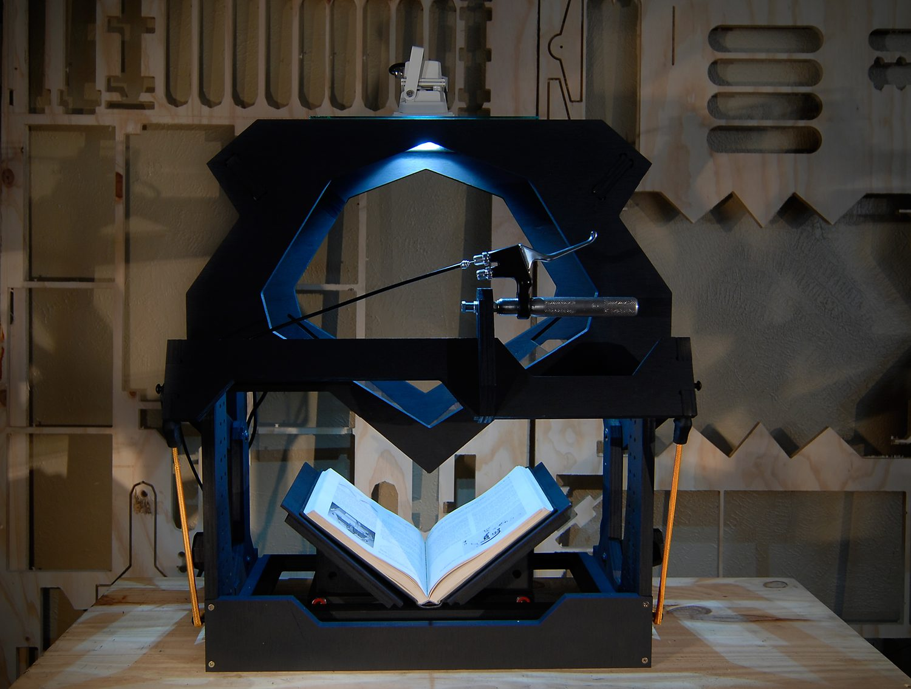
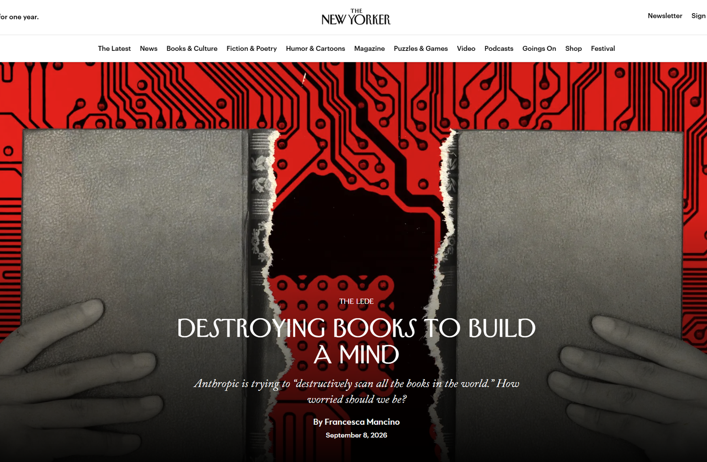
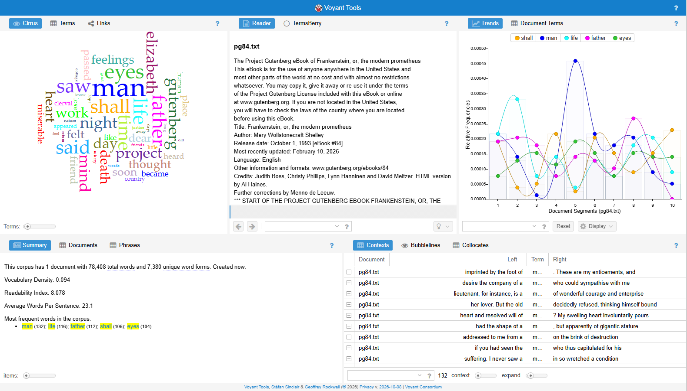
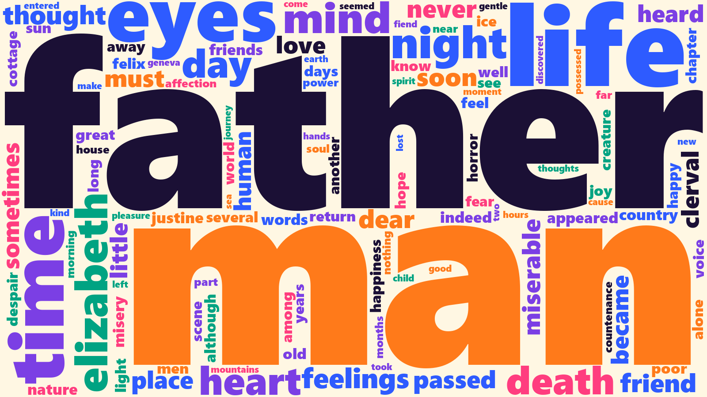
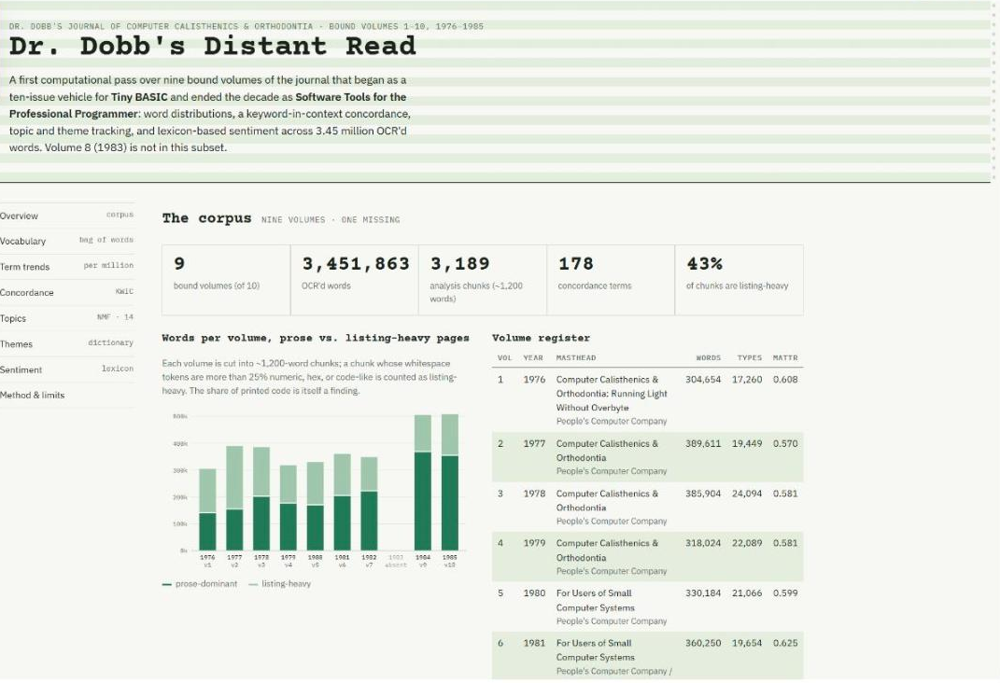
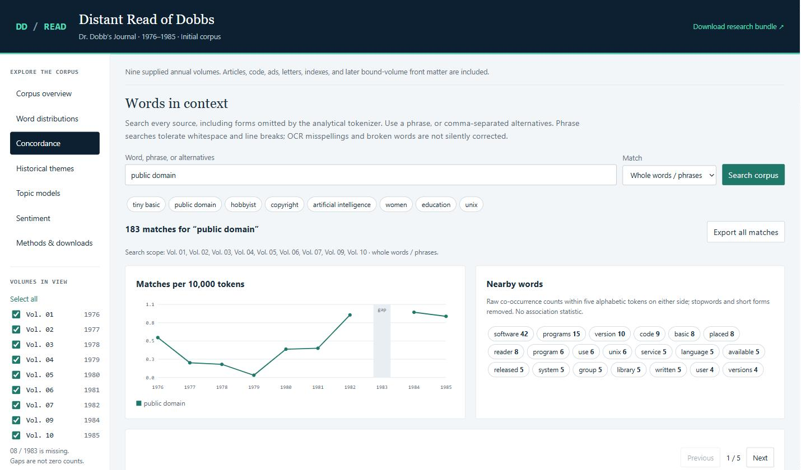

Module Three
> ENG 3861 // FEB 8 – FEB 21, 2027_
Close reading: one passage, slowly. Distant reading: patterns across many texts.
Ted Underwood's map of text analysis
In short, computational analysis of text is not a specific new technology or a subfield of digital humanities; it’s a wide-open conversation in the space between several different disciplines.
People make fun of word clouds, with some justice; they’re eye-catching but don’t give you a lot of information.
I guess Wordsworth does write “alone” a lot: but does he really do so more than other writers? “Alone” is a common word. How do we distinguish real insights about diction from specious cherry-picking?
Because this representation of text is radically different from readers’ sequential experience of language, people tend to be surprised that it works. But the goal of computational analysis is not, after all, to reproduce the modes of understanding readers have already achieved.

Before any of this works, someone has to digitize the books

Today, whole libraries are scanned to train AI models source
Miriam Posner takes DH projects apart
Many students tell me that in order to get started with digital humanities, they’d like to have some idea of what they might do and what technical skills they might need in order to do it.
A searchable map of the addresses contained in the 1956 Negro Travelers’ Green Book, which the user can filter by state or establishment type.
Often, people who are new to text analysis enjoy starting with the web-based Voyant Tools. I also like the Lexos suite.

Frankenstein in Voyant. Spot the words that aren't from the novel.

The same novel, cleaned: license text removed and common words filtered out
a demo from the graduate version of this course

A decade of Dr. Dobb's Journal, distant-read with Claude source

A concordance (keyword in context), the same idea as Voyant's Contexts tool source
watch the video, then do the exercise and post by Thursday
then search for those passages in Voyant's Contexts
> Find three passages where the word "[a word you explored in Voyant]" appears, and explain what it means in each.What pattern did you find that close reading alone would have missed?
Why might a tool that generates text be worse at counting than a tool built only to count?
Post: 3 screenshots (3 pts), a 250+ word reflection (4), one citation (1), two replies (2).